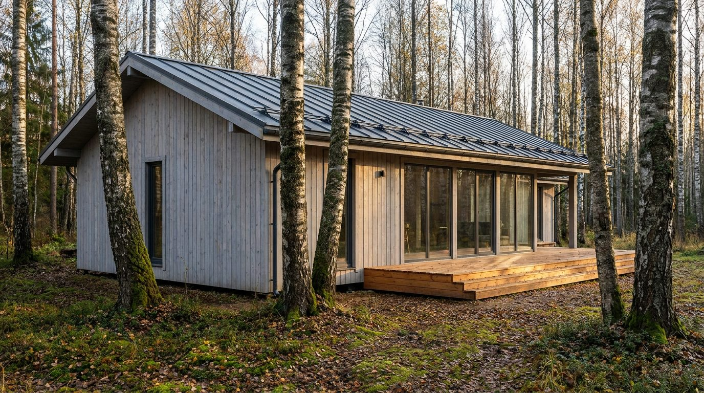
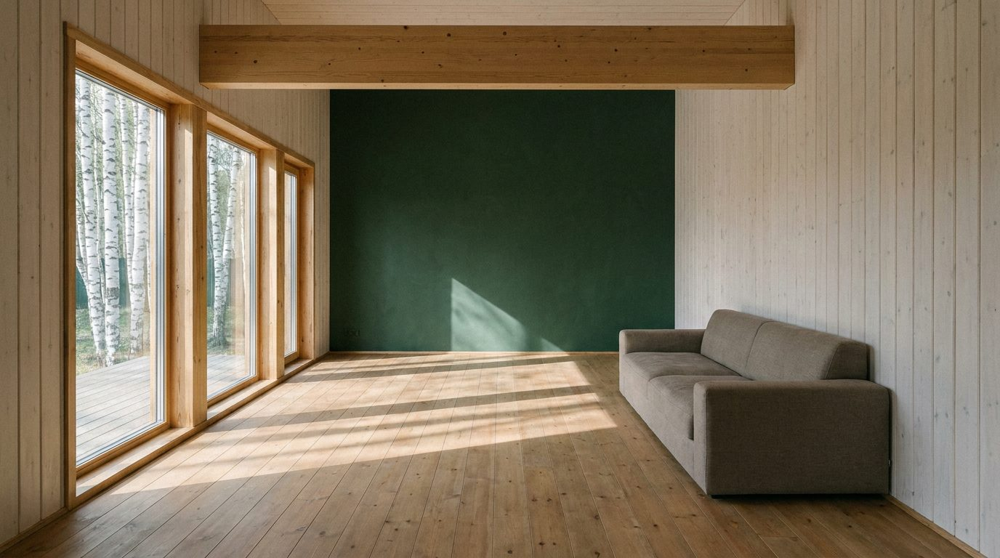

Atlante · INT-RU-02 · Russia · Europa
Dacha contemporanea in legno nella foresta di betulle, a ovest di Mosca
Esempi · esterno e interno


Perché funziona
In Russia il cliente compra la dacha come seconda casa di famiglia, non come status urbano: la legna, il bosco e la luce bassa sono il vero lusso, e il catalogo ha bisogno di questa voce perché il loud di int-ru-01 non copre il quotidiano. Poetica ci entra con il pino e la lana grezza, cioè con la parte del made in Italy che sa stare su una tavola di betulla senza dominarla: sedute basse, tessuti pesanti, ceramiche opache. Non deve diventare il cliché della izba con samovar, pellicce e banya: niente tronchi a vista rustici, niente ornamenti etnici. La dacha contemporanea è architettura sobria e precisa, e va fotografata come tale.
Architettura · elementi riproducibili
- finestra a nastro 3200 x 1800 mm sul fronte sud, telaio in abete 70 mm, vetro basso-emissivo
- perlinato verticale in abete 20 x 120 mm con listelli a vista e intercapedine ventilata 40 mm
- trave di colmo in legno lamellare 200 x 400 mm, passo 3000 mm, lasciata a vista
- camino in rame brunito 1800 x 600 mm con canna 250 mm fino al colmo
- pavimento in pino 200 mm, posa a filo senza battiscopa, soglie in rame
- veranda vetrata 4000 x 2500 mm con scorrevole a tre ante e soglia ribassata 20 mm
- un divano basso 2400 mm in lana grezza e un tavolo in betulla 1800 mm: nessun altro arredo
Fatto verificato: i lotti delle dacha non superano di norma 600 mq, in qualche caso 1.200-1.500 mq e quasi mai 0,96 ettari; nel 2019 circa il 62% dei russi frequenta la dacha in estate.
Fatto verificato: a Peredelkino, su proposta di Maksim Gorkij del 1934, l'area fu assegnata all'Unione degli Scrittori Sovietici e in pochi anni vi furono costruite una cinquantina di case in legno su progetto dell'architetto tedesco Ernst May.
Fatto verificato: la Betula pendula raggiunge i 30 m di altezza e ha corteccia bianca che si sfalda regolarmente; è nativa dell'Europa e dell'Asia temperata.
Valutazione: il registro è quiet per volontà del cliente, non per povertà di materia; il contrasto con int-ru-01 sta nel passare dal marmo lucido alla tavola di pino, dalla rappresentanza alla famiglia, e va tenuto senza inserti palaziali.
Luce
Prompt di generazione (EN)
Interior photograph of a contemporary timber dacha living room west of Moscow, single storey, 3.2 m ceiling with an exposed laminated ridge beam, vertical bleached spruce boarding 20 x 120 mm on the walls, wide honey-pine floorboards 200 mm oiled matte, a deep forest-green lime wall at the far end as the only saturated field, a 3200 x 1800 mm window with a 70 mm timber frame opening onto white birch trunks. One low 2400 mm linen sofa is the only furniture. Single key light from that window on camera left, sun at 22 degrees, 5100 K, long soft shadows crossing the floor, no fill, neutral white balance. 28 mm lens at 1.25 m, two-point perspective, verticals parallel, matte low-saturation grade, fine grain, no people, no text, no logos.